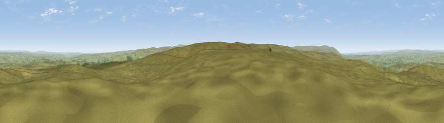

Viewpoint c11137_7473
#7068 in England · top 16% of its area beats it · —The view, rendered

A 360° render of this exact spot computed from the terrain model, tree cover and land cover — summer colours, afternoon light, calibrated against photographs of famous viewpoints. Real trees, hedges and buildings will differ in detail.
The panorama
Grey silhouette: terrain skyline in each direction (720 bearings, Earth curvature and refraction included). Dashed green: skyline with trees (+15 m) and buildings (+8 m) as obstacles. Blue strip: how far the ground is visible on each bearing.
Where the view opens
Wedge length = distance to the farthest visible ground on that bearing (vegetation-aware). Rings at 10, 25 and 50 km.
What fills the view
96% grassland · 3% woodland
Angular shares of the visible panorama (visual magnitude), not map area. Landscape diversity 0.08 (0–1 Shannon).
Key numbers
More beautiful places nearby
The staircase of upgrades: each row has a higher view potential than everything closer. Driving times are estimates from straight-line distance, calibrated against real road routing — check an actual route before setting out.
| Place | Direction | Drive | Score |
|---|---|---|---|
| Viewpoint c11151_7470 | NNW · 1 km | ~2 min | 68.4 |
| Viewpoint near Slaggyford | SSW · 3 km | ~8 min | 70.0 |
| Viewpoint near Halton Lea Gate | W · 10 km | ~19 min | 72.0 |
| Grey Nag | SW · 12 km | ~22 min | 75.7 |
| Viewpoint near Castle Carrock | W · 15 km | ~27 min | 76.9 |
| Viewpoint near Renwick | SSW · 16 km | ~28 min | 77.0 |
| Viewpoint near Cumrew | WSW · 17 km | ~30 min | 77.2 |
| Viewpoint near Cumrew | WSW · 18 km | ~32 min | 78.8 |
54.90724, -2.41210 · source: screening · position refined by local search. Computed location — check access rights before visiting.